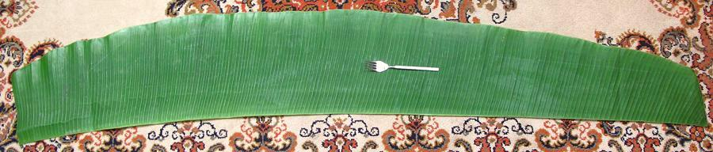

Banana Leaf / Plantain Leaf

[Bai Thong (Thai); Bai Guay (Laos); Musa acuminata,
M. balbisiana and M. acuminata x balbisiana]
Banana leaf is used in many tropical areas of the world in place of
plates, particularly at banquets and other large events, and in street
food stalls and restaurants. Plantain leaves may be a little tougher
than leaves of desert bananas. Leaves are also an important food wrapper
particularly to hold and protect food during steaming and for making rice
cakes, which may be cylindrical or pyramid shaped.
The photo shows a half banana leaf (split down the spine) with a
little off the ends. They are sold here in Southern California as
half and quarter leaves, fresh or frozen. The photo specimen, 6 feet
long and 10 inches wide, was not the longest or widest in the batch,
but was the longest that fit on my carpet.
More on Bananas.
Buying:
Banana leaves are easily available in the freezer
cases of Asian grocers here in Southern California, and probably through
much of the country. They need to be thawed thoroughly before unfolding,
but any leftovers can be refrozen without degrading. They are sometimes
available fresh here in Los Angeles, but sell out quickly. We have plenty
of banana plants growing here, but we also have the Santa Ana winds which
split them up pretty badly. Banana plants are tropical decoratives here
and don't fruit, because Southern California is too cold for them.
Prep:
Banana leaves should be passed over a flame or
blanched in boiling water before use as a wrapper. This makes them more
flexible and less likely to split up.
Subst:
Used as wrappers, banana leaves impart only a
slight flavor to food, so if you can't get them you can use corn husks
or parchment paper, or even aluminum foil (if no acidic ingredients)
without destroying the recipe. Of course the appearance will not be
"authentic".
bn_leafz* 101031 - www.clovegarden.com
©Andrew Grygus - agryg@clovegarden.com - Photos on this
page not otherwise credited are © cg1 -
Linking to and non-commercial use of this page permitted